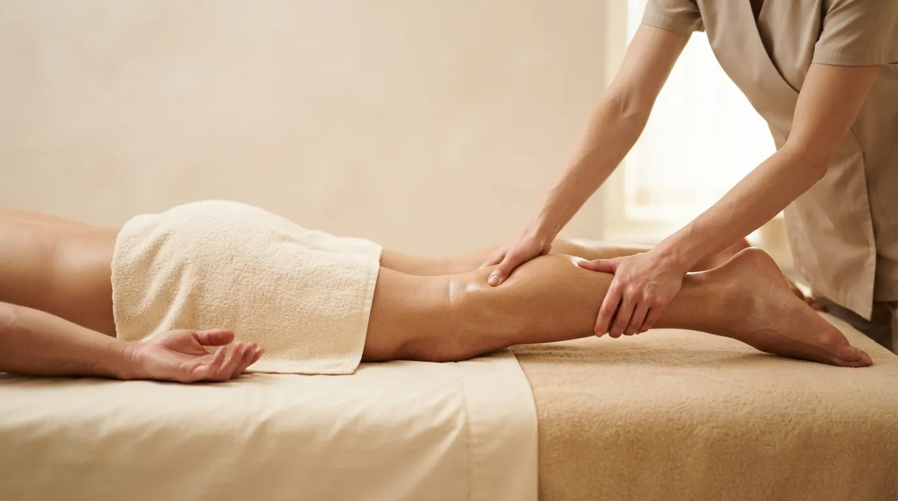

Body massage · Prague 4
Sports Massage in Prague
Muscle recovery after physical exertion and intense training. The massage releases tension, eases soreness and helps the body recover faster.
What sports massage is
Sports massage is a more intensive manual massage focused on the muscles that carry the most load. It works deeper than a relaxing massage and concentrates on the places where tension and stiffness settle after training.
It suits both recreational and regular athletes, and anyone who has had physically demanding days. I adjust the pressure and pace to how you feel and to the load your body has just been through.
How the treatment works
- A short consultation We talk about your sport, when you last trained and where you feel tension or pain.
- Warming the muscles Opening strokes with oil bring blood to the muscles and prepare them for deeper work.
- Deep work I focus on the loaded areas, usually legs, back and shoulders, and adjust the pressure to your response.
- Release and stretch Closing strokes relax the muscles and even out tension across the body.
What sports massage does
- faster muscle recovery after training
- releases tension and stiffness
- less muscle soreness after exertion
- better blood flow to the muscles
- more mobility and a lighter feeling in the body
- helps prevent overload with regular training
Who it suits
Sports massage is for runners, cyclists, gym-goers and anyone who trains regularly or has just completed a demanding effort. It also helps if your muscles are stiff from physical work or long hours on your feet.
When we do not massage
- a fresh injury, torn muscle or sprain (the first few days)
- inflammation, fever and acute illness
- skin conditions or wounds in the area to be massaged
- thrombosis or serious vein problems
- pregnancy without a doctor’s approval
Not sure? Call me before booking on +420 721 761 411 and we will talk it through.
Price of sports massage
Frequently asked questions
When is the best time to come after training?
Ideally a day or two after a hard session or race. Straight after the effort the muscles are tired and deep massage could load them further.
Does sports massage hurt?
It is more intense than a relaxing massage and you may feel pressure in stiff spots. It should never hurt so much that you tense up. I always adjust the pressure.
Can I train the day after?
Yes, light training is fine. The day after a deeper massage it is worth skipping maximum effort.
How often should I come?
With regular training, once every two to four weeks works well, more often before an important race. We will plan it around your training load.
Book your sports massage
The studio is in Prague 4 - Nusle, a short walk from Pankrác and Vyšehrad. Booking online takes a minute.